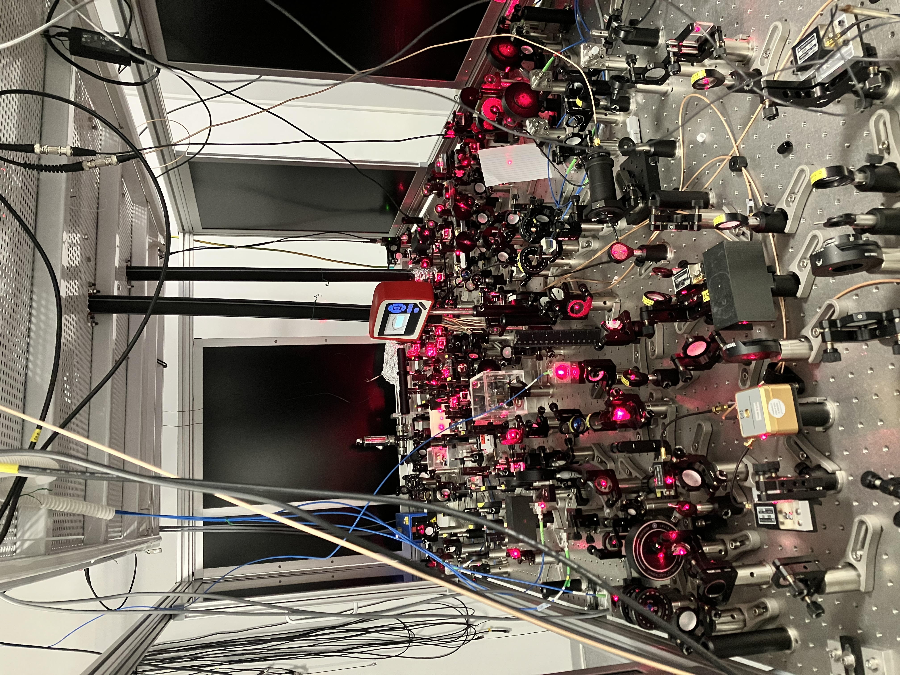
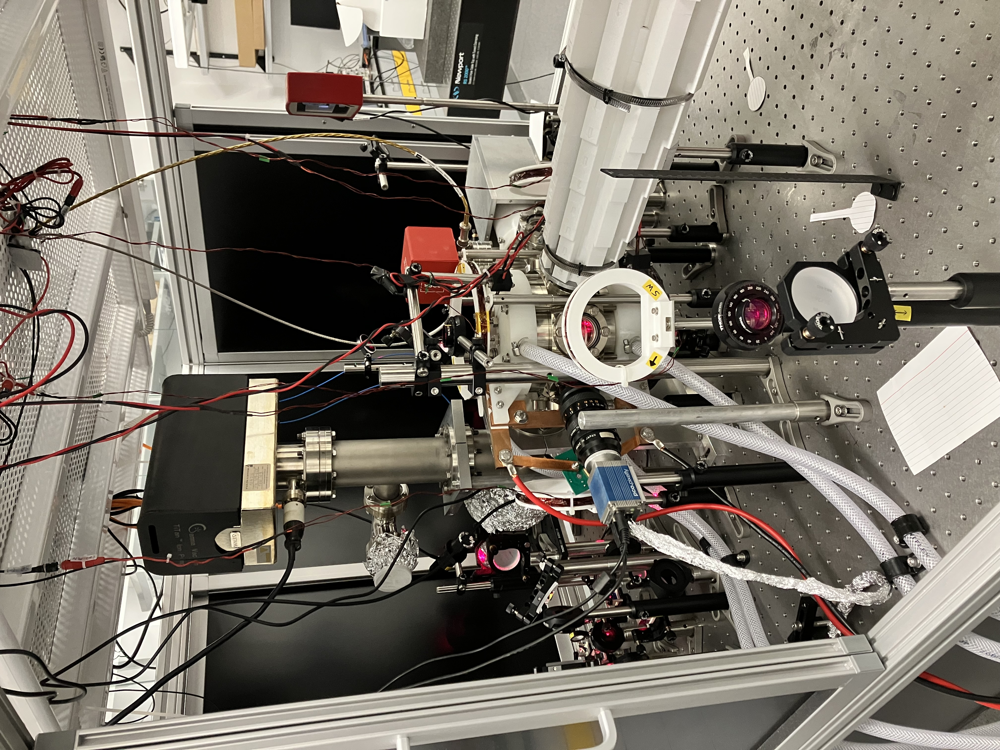
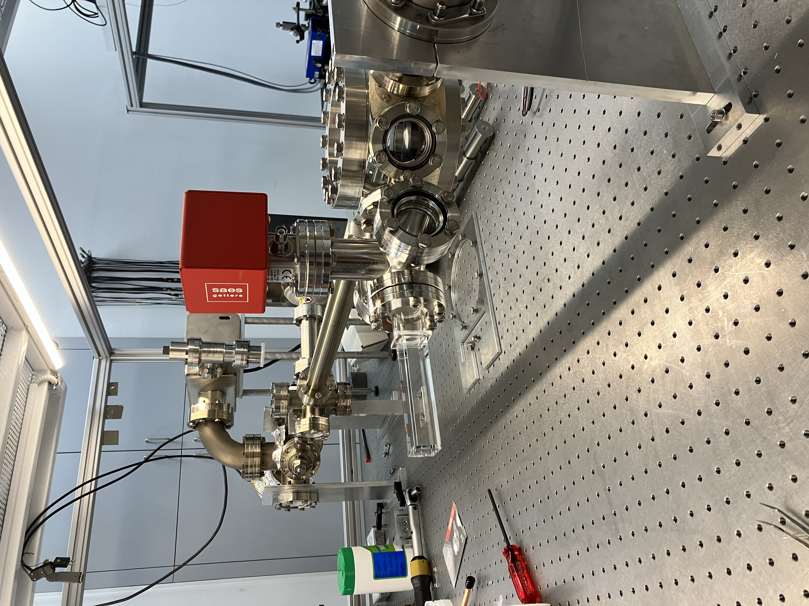

Research
Pushing the boundaries of quantum simulation and the physics of ultracold quantum gases — three core frontiers, one state-of-the-art machine.
A new era for LiLab
We have just completed building a state-of-the-art experimental setup specifically designed to routinely generate high-flux Bose–Einstein condensates (BECs) of lithium atoms. With this powerful new platform, we are launching an ambitious research program focused on three frontier areas where quantum physics has the most to reveal.
Higher-Order
Interactions
The standard description of a weakly interacting Bose gas — mean-field theory — is remarkably successful, but it is only the first term in a systematic expansion. Higher-order correlations, such as the three-body, give rise to entirely new quantum phases and phenomena that were inaccessible until now.
With our high-flux lithium BEC machine, we can explore these beyond-mean-field effects in new regimes that challenge our fundamental understanding of interacting quantum matter.


Coherent Few-Body
Physics
At ultracold temperatures, few-body physics exhibits universality: when the scattering length that characterizes inter-particle interactions is much larger than the range of potential, the system's behavior no longer depends on microscopic details. In this universal regime, three interacting bosons display the remarkable Efimov effect, a fascinating example of discrete scale invariance occurring in nature.
Our lab has been at the forefront of Efimov physics for over 15 years, publishing foundational results in PRL and Nature Communications. Our next chapter uses an originally developed interferometric approach to explore few-body states with unprecedented control and precision — resolving long-standing puzzles in lithium that we ourselves helped discover.
Ultracold
Chemistry
At microkelvin temperatures, chemical reactions enter a regime where quantum mechanics fully governs every step. Individual reaction pathways can be resolved, controlled, and even switched on and off using laser and magnetic fields.
Our program will probe state-to-state resolved chemical reactions in ultracold lithium gases — measuring reaction rates with quantum-state resolution and coherently manipulating which pathways are accessible. This is chemistry at its most fundamental level.

State-of-the-Art Equipment
A dedicated high-flux lithium BEC machine, purpose-built from the ground up.



The new lithium BEC machine · LiLab 2025
See the results
Over 50 publications in Physical Review Letters, Nature Communications, Physical Review A and more.
View All Publications →